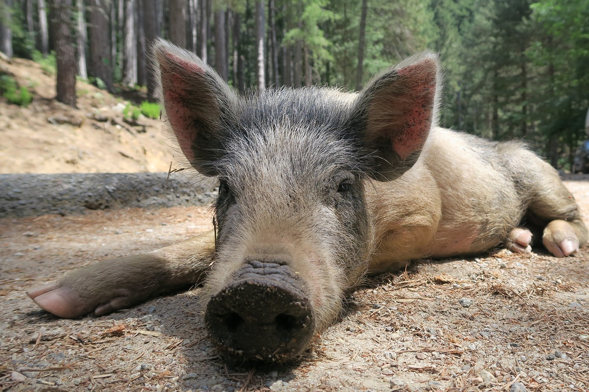

<div class="container my-5">
    <div class="card shadow p-4">
  
        <h1 class="mb-3">Loomad kui juhid: Milline juht on siga</h1>

        <p class="text-muted">Avaldatud: <strong>28.02.2025</strong> | Autor: <strong>Merlin Raid</strong></p>

        

      
        <p>Milline juht on siga?</p>
        <p>Siga on praktiline, töökas ja järjekindel, kuid võib jääda kinni vanadesse harjumustesse.
            <p></p>✅ Tugevused:
            Vastupidav ja töökindel – viib asjad lõpuni
            Ei lase end emotsioonidest häirida
            Ei otsi konflikte ja keskendub lahendustele</p>
            <p>❌ Nõrkused:
            Võib jääda kinni rutiini ja karta muutusi
            Ei pruugi olla loominguline või uuendusmeelne
            Eelistab töörahule uuenduslike riskide asemel</p>
            🧐 Kas siga on hea juht?
            Hea juht stabiilses keskkonnas, kus on vaja järjepidevust ja töökust, kuid ei pruugi sobida kiiresti muutuva ja innovaatilise valdkonna juhiks.</p>
        
        <div class="mb-3">
            <span class="badge bg-primary">#Juhtimine</span>
            <span class="badge bg-secondary">#Loomariik</span>
            <span class="badge bg-success">#Psühholoogia</span>
        </div>

        <div class="d-flex justify-content-between">
            <a href="?page=post4" class="btn btn-outline-primary" >&larr; Eelmine postitus</a>
        </div>
    </div>
</div>

